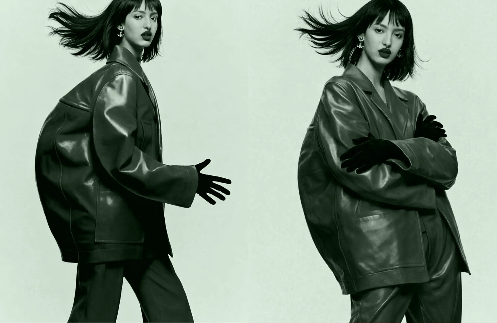
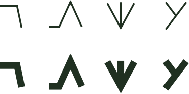
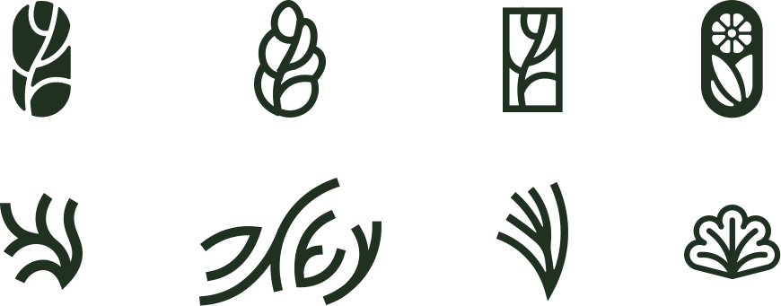

ISHTAR is a fashion brand providing a platform for Middle Eastern design. It promotes local Mizrahi art, drawing from the rich visual traditions of the founders' heritage. Located in Jerusalem’s Mahane-Yehuda market—the historic site of the legendary Morduch restaurant—the choice of location reflects the shared values of Ishtar and Morduch: preserving tradition through original arts and crafts.
We referenced the Hamsa, recreating it in a vegetal form inspired by vine leaves
Distilling the organic Hamsa symbol into a sharp, modern silhouette for the final brand identity
The logotype draws inspiration from the structural strokes of ancient Babylonian cuneiform writing

The characters of the Ishtar logotype were meticulously integrated into the abstracted symbol, merging language and icon
The symbol is designed to morph and adapt to any dimension, reinforcing a versatile and fluid brand identity that resonates with everyone, everywhere
These additional sketches showcase the progress, iterations and choises that were taken throughout the branding process.
We wanted to make sure the legacy of Morduch alongside its traditional Mizrahi heritage were reflected in Ishtar’s identity.

